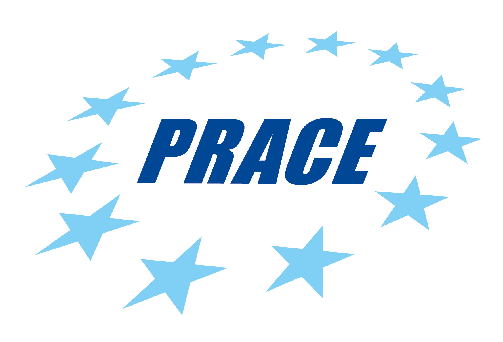
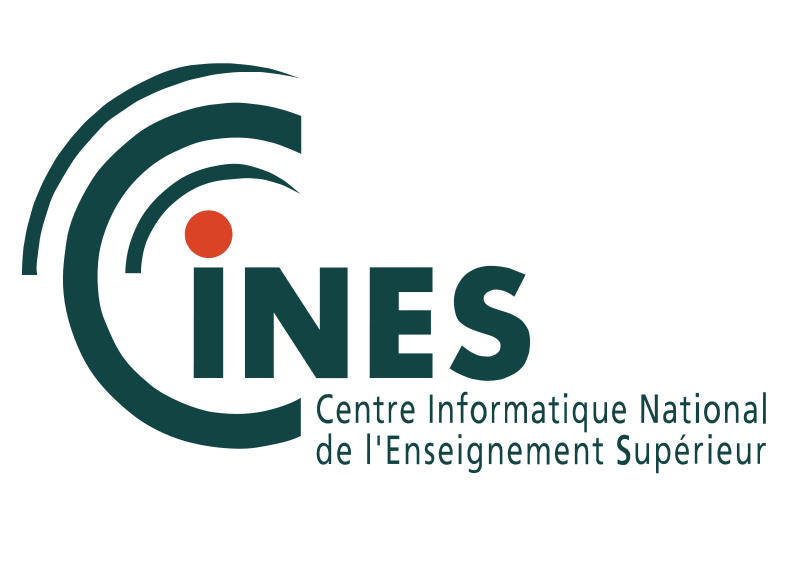

Table of Contents
Current and past main participants or main sponsors of the SPECFEM project (in no particular order)






This documentation has been automatically generated by pandoc based on the User manual (LaTeX version) in folder doc/USER_MANUAL/ (Mar 10, 2020)